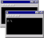

Page maintained by Ke-Sen Huang.
If you have additions or changes, send an e-mail.
Information here is provided with the permission of the ACM
Note that when possible I link to the page containing the link to the actual PDF or PS of the preprint.
I prefer this as it gives some context to the paper and avoids possible copyright problems with direct linking.
Thus you may need to search on the page to find the actual document.
ACM Digital Library:
ACM Transactions on Graphics (TOG) Volume 33, Issue 4 (July 2014) Proceedings of ACM SIGGRAPH 2014
ACM Digital Library (DOI) Link for the paper
Paper Abstract
Author Preprint
Paper Video
Paper Presentation
Paper Images
Paper Data
 Demo Program or Source Code
Related Links
Changelog
- Meta-representations of Shape Families


-
Noa Fish,
Melinos Averkiou
(University College London),
Oliver van Kaick
(Tel Aviv University),
Olga Sorkine-Hornung
(ETH Zurich),
Daniel Cohen-Or
(Tel Aviv University),
Niloy Mitra
(University College London)
- Organizing Heterogeneous Scene Collections through Contextual Focal Points
-
Kai Xu
(VisuCA/SIAT and National University of Defense Technology),
Rui Ma,
Hao Zhang
(Simon Fraser University),
Chenyang Zhu
(National University of Defense Technology),
Ariel Shamir
(Interdisciplinary Center),
Daniel Cohen-Or
(Tel Aviv University),
Hui Huang
(VisuCA/SIAT)
- Functional Map Networks for Analyzing and Browsing Large Shape Collections
-
Qixing Huang,
Fan Wang,
Leonidas Guibas
(Stanford University)
- Geometry and Context for Semantic Correspondences and Functionality Recognition in Man-Made 3D Shapes
-
Hamid Laga
(University of South Australia),
Michela Mortara,
Michela Spagnuolo
(Istituto di Matematica Applicata e Tecnologie Informatiche)
- Learning 3D Attributes of Images through Shape Collection
-
Su Hao,
Qixing Huang,
(Stanford University),
Niloy Mitra
(University College London)
Yangyan Li
Leonidas Guibas
(Stanford University)
- Parametric Wave Field Coding for Precomputed Sound Propagation
-
Nikunj Raghuvanshi,
John Snyder
(Microsoft Research)
- High-Order Diffraction and Diffuse Reflections for Interactive Sound Propagation in Large Environments
-
Carl Schissler,
Ravish Mehra,
Dinesh Manocha
(University of North Carolina at Chapel Hill)
- Eigenmode Compression for Modal Sound Models
-
Timothy R. Langlois,
Steven S. An,
Kelvin K. Jin,
Doug L. James
(Cornell University)
- Inverse-Foley Animation: Synchronizing rigid-body motions to sound
-
Timothy R. Langlois,
Doug L. James
(Cornell University)
- Refractive Radiative Transfer Equation
(TOG Paper)
-
Marco Ament,
Christoph Bergmann,
Daniel Weiskopf
(University of Stuttgart, Stuttgart, Germany)
- Continuous Projection for Fast L1 Reconstruction
-
Reinhold Preiner,
Oliver Mattausch,
Murat Arikan
(Vienna University of Technology),
Renato Pajarola
(University of Zurich),
Michael Wimmer
(Vienna University of Technology)
- Flower Modeling via X-ray Computed Tomography
-
Takashi Ijiri,
Shin Yoshizawa,
Hideo Yokota
(RIKEN),
Takeo Igarashi
(The University of Toky)
- k-d Darts: Sampling by k-Dimensional Flat Searches
(TOG Paper)
-
Mohamed S. Ebeida
(Sandia National Laboratories),
Anjul Patney
(University of California, Davis),
Scott A. Mitchell, Keith R. Dalbey
(Sandia National Laboratories),
Andrew A. Davidson,
John D. Owens
(University of California, Davis)
- Point Morphology
-
Stephane Calderon,
Tamy Boubekeur
(Telecom ParisTech)
- Floating Scale Surface Reconstruction
-
Simon Fuhrmann,
Michael Goesele
(TU Darmstadt)
- Facial Performance Enhancement Using Dynamic Shape Space Analysis
(TOG Paper)
-
Amit H. Bermano
(ETH Zurich and Disney Research Zurich),
Derek Bradley
(Disney Research Zurich),
Thabo Beeler,
Fabio Zund
(ETH Zurich and Disney Research Zurich),
Derek Nowrouzezahrai
(Disney Research Zurich and Universite de Montreal, Canada),
Ilya Baran
(Disney Research Zurich),
Olga Sorkine-Hornung
(ETH Zurich)
Hanspeter Pfister
(Harvard University),
Markus Gross
(ETH Zurich and Disney Research Zurich)
- Controllable High-Fidelity Facial Performance Transfer
-
Feng Xu
(Microsoft Research Asia),
Yilong Liu
(Tsinghua University, Beijing),
Jinxiang Chai
(Texas A&M University),
Xin Tong
(Microsoft Research Asia)
- Displaced Dynamic Expression Regression for Real-time Facial Tracking and Animation
-
Chen Cao,
Qiming Hou,
Kun Zhou
(Zhejiang University)
- Rigid Stabilization of Facial Expressions
-
Thabo Beeler,
Derek Bradley
(Disney Research Zurich),
- Generalizing Locomotion Style to New Animals With Inverse Optimal Regression
-
Kevin Wampler
(Adobe Systems, Inc.),
Zoran Popovic
(University of Washington),
Jovan Popovic
(Adobe Systems, Inc.)
- Learning Bicycle Stunts
-
Jie Tan,
Yuting Gu,
Karen Liu,
Greg Turk
(Georgia Institute of Technology)
- Data-driven control of flapping flight
(TOG Paper)
-
Eunjung Ju,
Jungdam Won,
Jehee Lee
(Seoul National University),
Byungkuk Choi,
Junyong Noh
(Korea Advanced Institute of Science and Technology),
Min Gyu Choi
(Kwangwoon University)
- Online Motion Synthesis Using Sequential Monte Carlo
-
Perttu Hamalainen,
Sebastian Eriksson,
Esa Tanskanen,
Ville Kyrki
(Aalto University),
Jaakko Lehtinen
(Aalto University and NVIDIA Research)
- Breathing Life into Shape: Capturing, Modeling and Animating 3D Human Breathing
-
Aggeliki Tsoli,
Naureen Mahmood,
Michael J. Black
(Max Planck Institute for Intelligent Systems)
- Authoring and Animating Painterly Characters
(TOG Paper)
-
Katie Bassett
(Disney Research Zurich and ETH Zurich)
Ilya Baran,
Johannes Schmid
(Disney Research Zurich),
Markus Gross
(Disney Research Zurich and ETH Zurich)
Robert W. Sumner
(Disney Research Zurich)
- Ink-and-Ray: Bas-Relief Meshes for Adding Global Illumination Effects to Hand-Drawn Characters
(TOG Paper)
-
Daniel Sykora
(Czech Technical University in Prague),
Ladislav Kavan
(University of Pennsylvania and ETH Zurich),
Martin Cadik
(MPI Informatik / Czech Technical University in Prague / Brno University of Technology),
Ondrej Jamriska
(Czech Technical University in Prague),
Alec Jacobson
(ETH Zurich),
Brian Whited,
Maryann Simmons
(Walt Disney Animation Studios),
Olga Sorkine-Hornung
(ETH Zurich)
- Computing Smooth Surface Contours with Accurate Topology
(TOG Paper)
-
Pierre Benard
(University of Toronto and Universite de Bordeaux),
Aaron Hertzmann
(University of Toronto / Adobe Research / Pixar Animation Studios),
Michael Kass
(Pixar Animation Studios)
- Fast Multipole Representation of Diffusion Curves and Points
-
Timothy Sun*,
Papoj Thamjaroenporn*,
Changxi Zheng
(Columbia University)
(*joint first authors)
- EZ-Sketching: Three-Level Optimization for Error-Tolerant Image Tracing
-
Qingkun Su
(Hong Kong University of Science and Technology),
Wing Ho Andy Li
(City University of Hong Kong),
Jue Wang
(Adobe Research),
Hongbo Fu
(City University of Hong Kong)
- Boosting Monte Carlo Rendering by Ray Histogram Fusion
(TOG Paper)
-
Mauricio Delbracio
(ENS-Cachan, France and Universidad de la Republica),
Pablo Muse
(Universidad de la Republica),
Antoni Buades
(ENS-Cachan, France and Universitat de les Illes Balears),
Julien Chauvier,
Nicholas Phelps
(e-on software),
Jean-Michel Morel
(ENS-Cachan, France)
- Factored Axis-Aligned Filtering for Rendering Multiple Distribution Effects
-
Soham Mehta,
Ravi Ramamoorthi
(University of California at Berkeley),
Fredo Durand
(MIT CSAIL)
- A Constructive Theory of Sampling for Image Synthesis using Reproducing Kernel Bases
-
Christian Lessig
(TU Berlin),
Mathieu Desbrun
(California Institute of Technology),
Eugene Fiume
(University of Toronto)
- Fast Tile-Based Adaptive Sampling with User-Specified Fourier Spectra
(
)
(
)
-
Florent Wachtel,
Adrien Pilleboue
(Universite de Lyon 1),
David Coeurjolly
(CNRS-LIRIS),
Katherine Breeden
(Stanford University),
Gurprit Singh,
Gael Cathelin
(Universite de Lyon 1),
Fernando de Goes,
Mathieu Desbrun
(Caltech),
Victor Ostromoukhov
(Universite de Lyon 1)
- A Local Frequency Analysis of Light Scattering and Absorption
(TOG Paper)
-
Laurent Belcour
(INRIA),
Kavita Bala
(Cornell University),
Cyril Soler
(INRIA)
- A Reflectance Display
-
Daniel Glasner
(Harvard University and The Weizmann Institute of Science),
Todd Zickler
(Harvard University),
Anat Levin
(The Weizmann Institute of Science)
- Focus 3D: Compressive Accommodation Display
(TOG Paper)
-
Andrew Maimone
(University of North Carolina at Chapel Hill),
Gordon Wetzstein
Matthew Hirsch
(MIT Media Lab),
Douglas Lanman
(MIT Media Lab and NVIDIA Research)
Ramesh Raskar
(MIT Media Lab),
Henry Fuchs
(University of North Carolina at Chapel Hill)
- A Compressive Light Field Projection System
-
Matthew Hirsch*
Gordon Wetzstein*
Ramesh Raskar
(MIT Media Lab) (*Joint first authorship)
- Eyeglasses-free Display: Towards Correcting Visual Aberrations with Computational Light Field Displays
-
Fu-Chung Huang
(University of California at Berkeley),
Gordon Wetzstein
(MIT Media Lab),
Brian A. Barsky
(University of California at Berkeley),
Ramesh Raskar
(MIT Media Lab)
- Cascaded Displays: Spatiotemporal Superresolution using Offset Pixel Layers
-
Felix Heide,
Douglas Lanman,
Dikpal Reddy,
Jan Kautz,
Kari Pulli,
David Luebke
(NVIDIA Research)
- Pteromys: Interactive Design and Optimization of Free-formed Free-flight Model Airplanes
-
Nobuyuki Umetani
(The University of Toky and Autodesk Research),
Yuki Koyama
(The University of Toky),
Ryan Schmidt
(Autodesk Research),
Takeo Igarashi
(The University of Toky)
- Wire Mesh Design
-
Akash Garg
(Columbia University),
Andrew Sageman-Furnas
(University of Gottingen),
Bailin Deng
(EPFL),
Yonghao Yue,
Eitan Grinspun
(Columbia University),
Mark Pauly
(EPFL)
Max Wardetzky
(University of Gottingen)
- Design and Fabrication by Example
-
Adriana Schulz
(MIT CSAIL),
Ariel Shamir
(Interdisciplinary Center)
David Levin,
Pitchaya Sitthi-Amorn,
Wojciech Matusik
(MIT CSAIL)
- Designing Inflatable Structures
-
Melina Skouras
(ETH Zurich and Disney Research Zurich),
Bernhard Thomaszewski,
Peter Kaufmann
(Disney Research Zurich),
Akash Garg
(Columbia University),
Bernd Bickel
(Disney Research Zurich),
Eitan Grinspun
(Columbia University),
Markus Gross
(ETH Zurich and Disney Research Zurich)
- Computational Design of Linkage-Based Characters
-
Bernhard Thomaszewski,
Stelian Coros
(Disney Research Zurich),
Eitan Grinspun
(Columbia University),
Vittorio Megaro
(ETH Zurich),
Markus Gross
(Disney Research Zurich and ETH Zurich)
Damien Gauge
(ETH Zurich)
- Parallel chen-han (PCH) algorithm for discrete geodesics
(TOG Paper)
-
Xiang Ying
Shi-Qing Xin,
Ying He
(Nanyang Technological University)
- Form-finding with polyhedral meshes made simple
-
Tang Chengcheng, Xiang Sun, Alexandra Gomes
(King Abdullah University of Science and Technology),
Johannes Wallner
(TU Graz),
Helmut Pottmann
(King Abdullah University of Science and Technology and TU Wien)
- Earth Mover's Distances on Discrete Surfaces
-
Justin Solomon,
Raif Rustamov,
Leonidas Guibas,
Adrian Butscher
(Stanford University)
- Controlling Singular Values with Semidefinite Programming
-
Shahar Kovalsky,
Noam Aigerman,
Ronen Basri,
Yaron Lipman
(The Weizmann Institute of Science)
- Lifted Bijections for Low Distortion Surface Mappings
-
Noam Aigerman,
Roi Poranne,
Yaron Lipman
(The Weizmann Institute of Science)
- VideoSnapping: Interactive Synchronization of Multiple Videos
-
Oliver Wang,
Christopher Schroers,
Henning Zimmer
(Disney Research Zurich),
Markus Gross
(ETH Zurich and Disney Research Zurich),
Olga Sorkine-Hornung
(ETH Zurich)
- First-person Hyper-lapse videos
-
Johannes Kopf,
Michael F. Cohen,
Richard Szeliski
(Microsoft Research)
- The Visual Microphone: Passive Recovery of Sound from Video
-
Myers Davis
(MIT CSAIL),
Michael Rubinstein
(Microsoft Research and MIT CSAIL),
Neal Wadhwa
(MIT CSAIL),
Gautham Mysore
(Adobe Research),
Fredo Durand,
William Freeman
(MIT CSAIL)
- Intrinsic Video and Applications
-
Genzhi Ye
(Tsinghua University, Beijing),
Elena Garces
(Universidad de Zaragoza),
Yebin Liu,
Qionghai Dai
(Tsinghua University, Beijing),
Diego Gutierrez
(Universidad de Zaragoza)
- Automatic Editing of Footage from Multiple Social Cameras
-
Ido Arev*
(Interdisciplinary Center and Disney Research),
Hyun-Soo Park*
(Carnegie Mellon University),
Yaser Sheikh,
Jessica K. Hodgins
(Carnegie Mellon University and Disney Research),
Ariel Shamir
(Interdisciplinary Center and Disney Research)
(* joint first authors )
- Boxelization: Folding 3D Objects Into Boxes
-
Yahan Zhou
(Disney Research),
Shinjiro Sueda,
Wojciech Matusik
(MIT CSAIL and Disney Research)
Ariel Shamir
(Interdisciplinary Center and Disney Research)
- The Connect-The-Dots Family of Puzzles: Design and Automatic Generation
-
Frank Staals, Gerwin Klappe,
Maarten Loffler,
Marc van Kreveld,
Mira Kaiser, Tim van Kapel
(Utrecht University),
- Self-Refining Games using Player Analytics
-
Matt Stanton,
Ben Humberston,
Brandon Kase
(Carnegie Mellon University) ,
James O'Brien
(University of California at Berkeley),
Kayvon Fatahalian,
Adrien Treuille
(Carnegie Mellon University)
- High-contrast Computational Caustic Design
-
Yuliy Schwartzburg,
Romain Testuz,
Andrea Tagliasacchi,
Mark Pauly
(EPFL)
- Poisson-based Continuous Surface Generation for Goal-based Caustics
(TOG Paper)
-
Yonghao Yue
(The University of Tokyo),
Kei Iwasaki
(Wakayama University),
Bing-Yu Chen
(National Taiwan University),
Yoshinori Dobashi
(Hokkaido University),
Tomoyuki Nishita
(The University of Tokyo)
- Locally Injective Parametrization With Arbitrary Fixed Boundaries
-
Ofir Weber
(Bar Ilan University),
Denis Zorin
(New York University)
- Provably Good Planar Mappings
-
Roi Poranne,
Yaron Lipman
(The Weizmann Institute of Science)
- Context-based Coherent Surface Completion
(TOG Paper)
-
Gur Harary,
Ayellet Tal
(Technion - Israel Institute of Technology),
Eitan Grinspun
(Columbia University)
- Diffusion Pruning for Rapidly and Robustly Selecting Global Correspondences using Local Isometry
(TOG Paper)
-
Gary K. L. Tam
(Cardiff University and Swansea University),
Ralph Martin,
Paul L. Rosin,
Yu-Kun Lai
(Cardiff University)
- Feature Matching With Bounded Distortion
(TOG Paper)
-
Yaron Lipman,
Stav Yagev,
Roi Poranne
(The Weizmann Institute of Science),
David W. Jacobs
(University of Maryland),
Ronen Basri,
(The Weizmann Institute of Science)
- DecoBrush: Drawing Structured Decorative Patterns by Example
-
Jingwan Lu,
Connie Wan
(Princeton University),
Connelly Barnes
(University of Virginia),
Adam Finkelstein
(Princeton University),
Paul Asente,
Radomir Mech
(Adobe Research)
- A Similarity Measure for Illustration Style
-
Elena Garces
(Universidad de Zaragoza),
Aseem Agarwala
(Adobe Systems, Inc.),
Diego Gutierrez
(Universidad de Zaragoza),
Aaron Hertzmann
(Adobe Research)
- Exploratory Font Selection Using Crowdsourced Attributes
-
Peter O'Donovan,
Janis Libeks
(University of Toronto),
Aseem Agarwala
(Adobe Systems, Inc.),
Aaron Hertzmann
(Adobe Research)
- Learning a Manifold of Fonts
-
Neill Campbell,
Jan Kautz
(University College London)
- Look Over Here: Attention-Directing Composition of Manga Elements
-
Ying Cao,
Rynson W.H. Lau,
Antoni B. Chan
(City Univerity of Hong Kong)
- Learning to be a depth camera for close-range human capture and interaction
-
Sean Ryan Fanello
(Istituto Italiano di Tecnologia),
Cem Keskin,
Shahram Izadi,
Pushmeet Kohli,
Jamie Shotton,
Antonio Criminisi,
David Kim,
David Sweeney
(Microsoft Research Cambridge),
Sing Bing Kang
(Microsoft Research)
- Temporal Frequency Probing for 5D Analysis of Global Light Transport
-
Matthew O'Toole
(University of Toronto),
Felix Heide,
Lei Xiao
(The University of British Columbia),
Matthias B. Hullin
(Friedrich-Wilhelms-Universitat Bonn),
Wolfgang Heidrich
(King Abdullah University of Science and Technology),
Kiriakos N. Kutulakos
(University of Toronto)
- Compressive Epsilon Photography for Post-Capture Control in Digital Imaging
-
Atsushi Ito
(SONY Corporation),
Salil Tambe,
Kaushik Mitra
(Rice University),
Aswin Sankaranarayan
(Carnegie Mellon University),
Ashok Veeraraghavan
(Rice University)
- Pinlight Displays: Wide Field of View Augmented-Reality Eyeglasses Using Defocused Point Light Sources
-
Andrew Maimone
(University of North Carolina at Chapel Hill),
Douglas Lanman
(NVIDIA Research),
Kishore Rathinavel,
Kurtis Keller
(University of North Carolina at Chapel Hill),
David Luebke
(NVIDIA Research),
Henry Fuchs
(University of North Carolina at Chapel Hill)
- Pixie Dust: Graphics Generated by Levitated and Animated Objects in a Computational Acoustic-Potential Field
-
Yoichi Ochiai
(The University of Tokyo),
Takayuki Hoshi
(Nagoya Institute of Technology),
Jun Rekimoto
(The University of Tokyo)
- Tangible and Modular Input Device for Character Articulation
-
Alec Jacobson
(Columbia University),
Daniele Panozzo,
Oliver Glauser,
(ETH Zurich),
Cedric Pradalier
(GeorgiaTech Lorraine),
Otmar Hilliges,
Olga Sorkine-Hornung
(ETH Zurich)
- Real-Time Continuous Pose Recovery of Human Hands Using Convolutional Networks
-
Jonathan Tompson,
Murphy Stein,
Yann LeCun,
Ken Perlin
(New York University)
- Interactive Manipulation of Large-Scale Crowd Animation
-
Jongmin Kim
(Seoul National University),
Yeongho Seol
(Weta Digital),
Taesoo Kwon
(Hanyang University),
Jehee Lee
(Seoul National University)
- Robust and Accurate Skeletal Rigging from Mesh Sequences
-
Binh Huy Le,
Zhigang Deng
(Univesity of Houston)
- Interactive Generalized Penetration Depth Computation for Rigid and Articulate Models Using Object Norm
(TOG Paper)
-
Tang Min,
Young J. Kim
(Ewha Womans University)
- Dynamic and Robust Local Clearance Triangulations
(TOG Paper)
-
Marcelo Kallmann
(University of California, Merced)
- Edit Propagation using Geometric Relationship Functions
(TOG Paper)
-
Paul Guerrero
(Vienna University of Technology and King Abdullah University of Science and Technology),
Stefan Jeschke
(IST Austria),
Michael Wimmer
(Vienna University of Technology),
Peter Wonka
(King Abdullah University of Science and Technology)
- Indexing 3D Scenes Using the Interaction Bisector Surface
(TOG Paper)
-
Xi Zhao, He Wang,
Taku Komura
(University of Edinburgh)
- Procedural design of exterior lighting for buildings with complex constraints
(TOG Paper)
-
Michael Schwarz
(Esri R&D Center Zurich)
Peter Wonka
(Arizona State University)
- Computing layouts with deformable templates
-
Chi-han Peng
(Arizona State University),
Yong-Liang Yang
(KAUST),
Peter Wonka
(Arizona State University)
- Bridging the Gap: Automated Steady Scaffoldings for 3D Printing
-
Jeremie Dumas
(Universite de Lorraine and INRIA),
Jean Hergel,
Sylvain Lefebvre
(INRIA and Universite de Lorraine)
- Computational Light Routing: 3D Printed Fiber Optics for Sensing and Display
(TOG Paper)
-
Thiago Pereira,
Szymon Rusinkiewicz
(Princeton University),
Wojciech Matusik
(MIT CSAIL)
- An Asymptotic Numerical Method for Inverse Elastic Shape Design
-
Xiang Chen
(Zhejiang University),
Changxi Zheng
(Columbia University),
Weiwei Xu
(Hangzhou Normal University),
Kun Zhou
(Zhejiang University)
- Spin-It: Optimizing Moment of Inertia for Spinnable Objects
-
Moritz Bacher
(Disney Research Zurich),
Emily Whiting
(ETH Zurich),
Bernd Bickel
(IST Austria),
Olga Sorkine-Hornung
(ETH Zurich)
- Build-to-Last: Strength to Weight 3D Printed Objects
-
Lin Lu
(Shandong University),
Andrei Sharf
(Ben-Gurion University),
Haisen Zhao,
Yuan Wei,
Qingnan Fan,
Xuelin Chen
(Shandong University),
Yann Savoye
(Ben-Gurion University),
Changhe Tu
(Shandong University),
Daniel Cohen-Or
(Tel Aviv University),
Baoquan Chen
(Shandong University)
- Unifying points, beams, and paths in volumetric light transport simulation
(
)
(
)
-
Jaroslav Krivanek
(Charles University in Prague),
Iliyan Georgiev
(Saarland University),
Toshiya Hachisuka
(Aarhus University),
Petr Vevoda,
Martin Sik
(Charles University in Prague),
Derek Nowrouzezahrai
(Disney Research Zurich and Universite de Montreal, Canada),
Wojciech Jarosz
(Disney Research Zurich)
- High-Order Similarity Relations in Radiative Transfer
-
Shuang Zhao
(Cornell University),
Ravi Ramamoorthi
(University of California at Berkeley),
Kavita Bala
(Cornell University)
- Multiplexed Metropolis Light Transport
-
Toshiya Hachisuka
(Aarhus University),
Anton S. Kaplanyan,
Carsten Dachsbacher
(Karlsruhe Institute of Technology)
- On-line Learning of Parametric Mixture Models for Light Transport Simulation
-
Jiri Vorba,
Ondrej Karlik,
Martin Sik
(Charles University in Prague),
Tobias Ritschel
(Max-Planck-Institut fur Informatik),
Jaroslav Krivanek
(Charles University in Prague)
- The Natural-Constraint Representation of the Path Space for Efficient Light Transport Simulation
-
Anton S. Kaplanyan,
Johannes Hanika,
Carsten Dachsbacher
(Karlsruhe Institute of Technology)
- Subspace Clothing Simulation Using Adaptive Bases
-
Fabian Hahn
(ETH Zurich and Disney Research Zurich),
Bernhard Thomaszewski,
Stelian Coros,
Robert W. Sumner
(Disney Research Zurich),
Forrester Cole,
Mark Meyer,
Tony DeRose
(Pixar Animation Studios),
Markus Gross
(ETH Zurich and Disney Research Zurich)
- Simulating articulated subspace self-contact
-
Yun Teng
(University of California, Santa Barbara),
Miguel A. Otaduy
(URJC Madrid),
Theodore Kim
(University of California, Santa Barbara)
- Sensitivity-optimized Rigging for Example-based Real-time Clothing Synthesis
-
Weiwei Xu
(Hangzhou Normal University),
Nobuyuki Umetani
(The University of Toky),
Qianwen Chao
(State Key Lab of CAD&CG, Zhejiang University),
Jie Mao
(Google),
Xiaogang Jin
(State Key Lab of CAD&CG, Zhejiang University),
Xin Tong
(Microsoft Research Asia)
- Space-Time Editing of Elastic Motion through Material Optimization and Reduction
-
Siwang Li,
Jin Huang
(State Key Lab of CAD&CG, Zhejiang University),
Fernando de Goes
(California Institute of Technology),
Xiaogang Jin
Hujun Bao
(State Key Lab of CAD&CG, Zhejiang University),
Mathieu Desbrun
(California Institute of Technology)
- Animating Deformable Objects using Sparse Spacetime Constraints
-
Christian Schulz
(Max-Planck-Institut fur Informatik),
Christoph von Tycowicz
(FU Berlin),
Hans-Peter Seidel,
Klaus Hildebrandt
(Max-Planck-Institut fur Informatik)
- Animation of Deformable Bodies with Quadratic Bezier Finite Elements
-
Adam Bargteil,
Elaine Cohen
(University of Utah)
- Adaptive Tearing and Cracking of Thin Sheets
-
Tobias Pfaff,
Rahul Narain,
Juan Miguel de Joya,
James O'Brien
(University of California at Berkeley),
- Codimensional Surface Tension Flow on Simplicial Complices
-
Bo Zhu,
Edward Quigley,
Matthew Cong,
Justin Solomon,
Ron Fedkiw
(Stanford University)
- Multimaterial Mesh-Based Surface Tracking
-
Fang Da,
Christopher Batty
(University of Waterloo),
Eitan Grinspun
(Columbia University)
- Physics-Inspired Adaptive Fracture Refinement
-
Zhili Chen,
Miaojun Yao,
Renguo Feng,
Huamin Wang
(Ohio State University)
- genBRDF: Discovering New Analytic BRDFs with Genetic Programming
-
Adam Brady,
Jason Lawrence
(University of Virginia),
Pieter Peers
(College of William & Mary),
Westley Weimer
(University of Virginia)
- Discrete Stochastic Microfacet Models
-
Wenzel Jakob
(Cornell University),
Milos Hasan,
Ling-Qi Yan
(University of California at Berkeley),
Jason Lawrence
(University of Virginia),
Ravi Ramamoorthi
(University of California at Berkeley),
Steve Marschner
(Cornell University)
- Rendering Glints on High-Resolution Normal-Mapped Specular Surfaces
-
Ling-Qi Yan,
Milos Hasan
(University of California at Berkeley),
Wenzel Jakob
(Cornell University),
Jason Lawrence
(University of Virginia),
Steve Marschner
(Cornell University),
Ravi Ramamoorthi
(University of California at Berkeley)
- Reflectance Scanning: Estimating Shading Frame and BRDF with Generalized Linear Light Sources
-
Guojun Chen
(Tianjin University),
Yue Dong
(Microsoft Research Asia)
Pieter Peers
(College of William & Mary),
Jiawan Zhang
(Tianjin University),
Xin Tong
(Microsoft Research Asia)
- A Comprehensive Framework for Rendering Layered Materials
-
Wenzel Jakob
(Cornell University),
Eugene d'Eon
(Weta Digital),
Otto Jakob,
Steve Marschner
(Cornell University)
- Near-Regular Structure Extraction Using Linear Programming
(TOG Paper)
-
Qixing Huang,
Leonidas Guibas
(Stanford University),
Niloy Mitra
(University College London)
- Relating Shapes via Geometric Symmetries and Regularities
-
Art Tevs
(Max-Planck-Institut fur Informatik),
Qixing Huang,
(Stanford University),
Michael Wand,
Hans-Peter Seidel
(Max-Planck-Institut fur Informatik),
Leonidas Guibas
(Stanford University)
- Shape2Pose: Human-Centric Shape Analysis
-
Vladimir G. Kim
(Stanford University),
Siddhartha Chaudhuri
(Princeton University),
Leonidas Guibas
(Stanford University),
Thomas Funkhouser
(Princeton University)
- Mesh saliency via spectral processing
(TOG Paper)
-
Ran Song,
Yonghuai Liu
(Aberystwyth University),
Ralph Martin,
Paul L. Rosin,
(Cardiff University)
- Inverse Procedural Modeling of Facade Layouts
-
Fuzhang Wu
(LIAMA-NLPR, CASIA / KAUST),
Dong-Ming Yan
(KAUST / LIAMA-NLPR, CASIA),
Weiming Dong, Xiaopeng Zhang,
(LIAMA-NLPR, CASIA),
Peter Wonka
(KAUST / Arizona State University)
- PushPull++
-
Markus Lipp
(Esri R&D Center Zurich),
Peter Wonka
(Arizona State University),
Pascal Mueller
(Esri R&D Center Zurich)
- Flow complex based shape reconstruction from 3D curves
(TOG Paper)
-
Bardia Sadri,
Karan Singh
(University of Toronto)
- True2Form: 3D Curve Networks from 2D Sketches via Selective Regularization
-
Baoxuan Xu,
William Chang,
Alla Sheffer
(The University of British Columbia),
Adrien Bousseau
(INRIA),
James McCrae,
Karan Singh
(University of Toronto)
- Interactive Shape Modeling using a Skeleton-Mesh Co-Representation
-
J. Andreas Barentzen
(Technical University of Denmark),
Rinat Abdrashitov,
Karan Singh
(University of Toronto)
- Vector Graphics Complexes
-
Boris Dalstein
(The University of British Columbia),
Remi Ronfard
(Inria),
Michiel van de Panne
(The University of British Columbia)
- Defending Continuous Collision Detection against Errors
-
Huamin Wang
(Ohio State University)
- Adaptive Nonlinearity for Collisions in Complex Rod Assemblies
-
Danny Kaufman
(Adobe Systems, Inc.),
Rasmus Tamstorf
(Walt Disney Animation Studios),
Breannan Smith
(Columbia University),
Jean-Marie Aubry
(Weta Digital),
Eitan Grinspun
(Columbia University)
- A Reduced Model for Interactive Hairs
-
Menglei Chai
(Zhejiang University),
Changxi Zheng
(Columbia University),
Kun Zhou
(Zhejiang University)
- Capturing and Stylizing Hair for 3D Fabrication
-
Jose I. Echevarria
(Universidad de Zaragoza),
Derek Bradley
(Disney Research Zurich),
Diego Gutierrez
(Universidad de Zaragoza),
Thabo Beeler
(Disney Research Zurich)
- Robust Hair Capture Using Simulated Examples
-
Liwen Hu,
Chongyang Ma
(University of Southern California),
Linjie Luo
(Adobe Research),
Hao Li
(University of Southern California)
- Automating Image Morphing using Structural Similarity on a Halfway Domain
(TOG Paper)
-
Jing Liao
(Hong Kong University of Science and Technology),
Rodolfo Lima,
Diego Nehab
(IMPA),
Hugues Hoppe
(Microsoft Research),
Pedro Sander
(Hong Kong University of Science and Technology),
Jinhui Yu
(Zhejiang University)
- 3D Object Manipulation in a Single Image using Stock 3D Models
-
Natasha Kholgade,
Tomas Simon
(Carnegie Mellon University),
Alexei Efros
(University of California at Berkeley),
Yaser Sheikh,
(Carnegie Mellon University)
- Bilateral Texture Filtering
-
Hojin Cho,
Hyunjoon Lee
(Pohang University of Science and Technology),
Henry Kang
(University of Missouri - St. Louis),
Seungyong Lee
(Pohang University of Science and Technology)
- Fast Local Laplacian Filters: Theory and Applications
(TOG Paper)
-
Mathieu Aubry
(INRIA),
Sylvain Paris
(Adobe Systems, Inc.),
Samuel W. Hasinoff
(Google),
Jan Kautz
(University College London),
Fredo Durand
(MIT CSAIL)
- Image Completion using Planar Structure Guidance
-
Jia-Bin Huang
(University of Illinois at Urbana-Champaign),
Sing Bing Kang
(Microsoft Research),
Narendra Ahuja
(University of Illinois at Urbana-Champaign),
Johannes Kopf
(Microsoft Research)
- Frame Fields: Anisotropic and Non-Orthogonal Cross Fields
-
Daniele Panozzo,
(ETH Zurich),
Enrico Puppo
(Universita di Genova),
Marco Tarini
(Universita dell'Insubria, Varese),
Olga Sorkine-Hornung
(ETH Zurich)
- Robust Field-Aligned Global Parametrization
-
Ashish Myles
(Google Inc.),
Nico Pietroni
(Istituto di Scienza e Tecnologie dell'Informazione),
Denis Zorin
(New York University)
- Exploring Quadrangulations
(TOG Paper)
-
Chi-Han Peng
(Arizona State University),
Michael Barton,
Caigui Jiang
(King Abdullah University of Science and Technology),
Peter Wonka
(Arizona State University)
- Weighted Triangulations for Geometry Processing
(TOG Paper)
-
Fernando de Goes
(California Institute of Technology),
Pooran Memari
(Telecom ParisTech),
Patrick Mullen,
Mathieu Desbrun
(California Institute of Technology)
- Robust Polylines Tracing for N-symmetry Direction Field on Triangulated Surfaces
-
Nicolas Ray
(INRIA),
Dmitry Sokolov
(Universite de Lorraine)
- Blending Liquids
-
Karthik Raveendran
(Georgia Institute of Technology),
Chris Wojtan
(IST Austria),
Nils Thuerey
(TU Munich),
Greg Turk
(Georgia Institute of Technology)
- Augmented MPM for Phase-Change and Varied Materials
-
Alexey Stomakhin
(Walt Disney Animation Studios),
Craig Schroeder,
Chenfanfu Jiang
(University Of California, Los Angeles),
Lawrence Chai
(Walt Disney Animation Studios),
Joseph Teran
(University Of California, Los Angeles),
Andrew Selle
(Walt Disney Animation Studios)
- From Capture to Simulation - Connecting Forward and Inverse Problems in Fluids
-
James Gregson
(The University of British Columbia),
Ivo Ihrke
(INRIA Bordeaux),
Nils Thuerey
(TU Munich),
Wolfgang Heidrich
(King Abdullah University of Science and Technology)
- Smoke Rings from Smoke
-
Steffen Weissman,
Ulrich Pinkall
(TU Berlin),
Peter Schroder
(California Institute of Technology)
- Detailed Water on Coarse Grids: Combining Surface Meshes and Adaptive Discontinuous Galerkin
-
Essex Edwards,
Robert Bridson
(The University of British Columbia)
- AMFS: Adaptive Multi-Frequency Shading for Future Graphics Processors
-
Petrik Clarberg,
Robert Toth,
Jon Hasselgren,
Jim Nilsson
(Intel Corporation),
Tomas Akenine-Moller
(Lund University and Intel Corporation)
- Extending the Graphics Pipeline with Adaptive, Multi-Rate Shading
-
Yong He,
Yan Gu,
Kayvon Fatahalian
(Carnegie Mellon University)
- RayCore: A ray-tracing hardware architecture for mobile devices
(TOG Paper)
-
Jae-Ho Nah
(Sejong University and University of North Carolina at Chapel Hill),
Hyuck-Joo Kwon, Dong-Seok Kim
(Sejong University),
Cheol-Ho Jeong
(Siliconarts),
Jinhong Park
(LG Electronics),
Tack-Don Han
(Yonsei University),
Dinesh Manocha
(University of North Carolina at Chapel Hill),
Woo-Chan Park
(Sejong University)
- Embree - A Kernel Framework for Efficient CPU Ray Tracing
-
Ingo Wald,
Sven Woop,
Carsten Benthin,
Gregory S Johnson,
Manfred Ernst
(Intel)
- Darkroom: Compiling High-Level Image Processing Code into Hardware Pipelines
-
James Hegarty,
John Brunhaver,
Zachary DeVito
(Stanford University),
Jonathan Ragan-Kelley
(MIT CSAIL),
Noy Cohen,
Steven Bell,
Artem Vasilyev,
Mark Horowitz,
Pat Hanrahan
(Stanford University)
- Modeling and Optimizing Eye Vergence Response to Stereoscopic Cuts
-
Krzysztof Templin
(Max-Planck-Institut fur Informatik and MIT CSAIL),
Piotr Didyk
(MIT CSAIL),
Karol Myszkowski,
(Max-Planck-Institut fur Informatik),
Mohamed M. Hefeeda
(Qatar Computing Research Institute),
Hans-Peter Seidel
(Max-Planck-Institut fur Informatik),
Wojciech Matusik
(MIT CSAIL)
- How Do People Edit Light Fields?
-
Adrian Jarabo,
Belen Masia
(Universidad de Zaragoza),
Adrien Bousseau
(INRIA Sophia-Antipolis),
Fabio Pellacini
(Sapienza Universita'di Roma),
Diego Gutierrez
(Universidad de Zaragoza)
- Simulating and compensating changes in appearance between day and night vision
-
Robert Wanat,
Rafal K. Mantiuk
(Bangor University)
- Style Transfer for Headshot Portraits
-
YiChang Shih
(MIT CSAIL),
Sylvain Paris
(Adobe Systems, Inc.),
Connelly Barnes
(University of Virginia),
Fredo Durand,
William Freeman
(MIT CSAIL)
- Transient Attributes for High-Level Understanding and Editing of Outdoor Scenes
-
Pierre-Yves Laffont,
Zhile Ren,
Xiaofeng Tao,
Chao Qian,
James Hays
(Brown University)
- Progressive Light Transport Simulation on the GPU: Survey and Improvements
(TOG Paper)
-
Tomas Davidovic
(Saarland University and Intel VCI),
Jaroslav Krivanek
(Charles University in Prague),
Milos Hasan
(Autodesk, Inc.),
Philipp Slusallek
(Saarland University and DFKI)
- A Practical Algorithm for Rendering Interreflections with All-frequency BRDFs
(TOG Paper)
-
Kun Xu,
Yan-Pei Cao,
Li-Qian Ma
(Tsinghua University, Beijing),
Zhao Dong
(Cornell University),
Rui Wang
(University of Massachusetts),
Shi-Min Hu
(Tsinghua University, Beijing)
- Compact Precomputed Voxelized Shadows
-
Erik Sintorn,
Viktor Kampe,
Ola Olsson,
Ulf Assarsson
(Chalmers University of Technology)
- Instant Convolution Shadows for Volumetric Detail Mapping
(TOG Paper)
-
Daniel Patel
(Christian Michelsen Research and University of Bergen),
Veronika Solteszova,
Jan Martin Nordbotten,
Stefan Bruckner
(University of Bergen)
- Dynamic Ray Stream Traversal
-
Rasmus Barringer
(Lund University),
Tomas Akenine-Moller
(Lund University and Intel Corporation)
- Deformation Embedded for Point-Based Elastoplastic Simulation
(TOG Paper)
-
Ben Jones,
Stephen Ward, Ashok Jallepalli, Joseph Perenia,
Adam Bargteil
(University of Utah)
- Exponential Integrators for Stiff Elastodynamic Problems
-
Dominik Michels
(California Institute of Technology),
Gerrit Sobottka,
Andreas Weber
(Rheinische Friedrich-Wilhelms-Universitat Bonn)
- Unified Particle Physics for Real-Time Applications
-
Miles Macklin,
Matthias Muller,
Nuttapong Chentanez,
Tae-Yong Kim
(NVIDIA Research)
- Projective Dynamics: Fusing Constraint Projections for Fast Simulation
(
)
(
)
-
Sofien Bouaziz
(EPFL),
Sebastian Martin
(VM Research),
Tiantian Liu,
Ladislav Kavan
(University of Pennsylvania),
Mark Pauly
(EPFL)
- Active Volumetric Musculoskeletal Systems
-
Ye Fan,
Joshua Litven,
Dinesh K. Pai
(The University of British Columbia)
- Coupled Structure-from-Motion and 3D Symmetry Detection for Urban Facades
(TOG Paper)
-
Duygu Ceylan
(EPFL),
Niloy Mitra
(University College London)
Youyi Zheng
(Yale University),
Mark Pauly
(EPFL)
- Painting-to-3D Model Alignment Via Discriminative Visual Elements
(TOG Paper)
-
Mathieu Aubry
(INRIA and TU Munchen),
Bryan C. Russell
(Intel Labs),
Josef Sivic
(INRIA)
- Color Map Optimization for 3D Reconstruction with Consumer Depth Cameras
-
Qian-Yi Zhou,
Vladlen Koltun
(Stanford University)
- Real-Time Non-Rigid Reconstruction Using an RGB-D Camera
-
Michael Zollhofer
(Friedrich-Alexander-Universitat Erlangen-Nurnberg),
Matthias Niesner
(Stanford University),
Shahram Izadi,
Christoph Rehmann,
Christopher Zach
(Microsoft Research Cambridge),
Matthew Fisher
(Stanford University),
Chenglei Wu
(Max-Planck-Institut fur Informatik),
Andrew Fitzgibbon
(Microsoft Research Cambridge),
Charles Loop
(Microsoft Research),
Christian Theobalt
(Max-Planck-Institut fur Informatik),
Marc Stamminger
(Friedrich-Alexander-Universitat Erlangen-Nurnberg)
- Proactive 3D Scanning of Inaccessible Parts
-
Feilong Yan
(VisuCA/SIAT),
Andrei Sharf
(Ben-Gurion University),
Wenzhen Lin,
Hui Huang
(VisuCA/SIAT),
Baoquan Chen
(Shandong University and VisuCA/SIAT)
- Topology-Varying 3D Shape Creation via Structural Blending
-
Ibraheem Alhashim,
Honghua Li
(Simon Fraser University),
Kai Xu
(National University of Defense Technology and VisuCA/SIAT),
Junjie Cao
(Dalian University of Technology),
Rui Ma,
Hao Zhang
(Simon Fraser University)
- Continuity Transition With a Single Regular Curved-Knot Spline Surface
-
Kan-Le Shi,
Jun-Hai Yong,
Jia-Guang Sun,
Jean-Claude Paul
(Tsinghua University, Beijing)
- L1-based Construction of Polycube Maps from Complex Shapes
(TOG Paper)
-
Jin Huang,
Tengfei Jiang, Zeyun Shi
(State Key Lab of CAD&CG, Zhejiang University),
Yiying Tong
(Michigan State University),
Hujun Bao
(State Key Lab of CAD&CG, Zhejiang University),
Mathieu Desbrun
(California Institute of Technology)
- Harmonic Parameterization by Electrostatics
(TOG Paper)
-
He Wang*
(University of Edinburgh),
Kirill Sidorov*
(Cardiff University),
Peter Sandilands,
Taku Komura
(University of Edinburgh) (*joint first authors)
- Decoupling Noises and Features via Weighted l1-analysis Compressed Sensing
(TOG Paper)
-
Ruimin Wang,
Zhouwang Yang,
Ligang Liu,
Jiansong Deng,
Falai Chen
(University of Science and Technology of China)
- AverageExplorer: Interactive Exploration and Alignment of Visual Data Collections
-
Jun-Yan Zhu,
Yong Jae Lee,
Alexei Efros
(University of California at Berkeley)
- Intrinsic Images in the Wild
-
Sean Bell,
Kavita Bala,
Noah Snavely
(Cornell University)
- Exposing Photo Manipulation from Shading and Shadows
(TOG Paper)
-
Eric Kee
(Columbia University),
James O'Brien
(University of California at Berkeley),
Hany Farid
(Dartmouth College)
- Automatic scene inference for 3D object compositing
(TOG Paper)
-
Kevin Karsch
(University of Illinois at Urbana Champaign),
Sunkavalli, K. Hadap, S.; Carr, N.; Jin, H.; Fonte, R.; Sittig, M.,
David Forsyth
(University of Illinois at Urbana Champaign)
kesen.huang@gmail.com